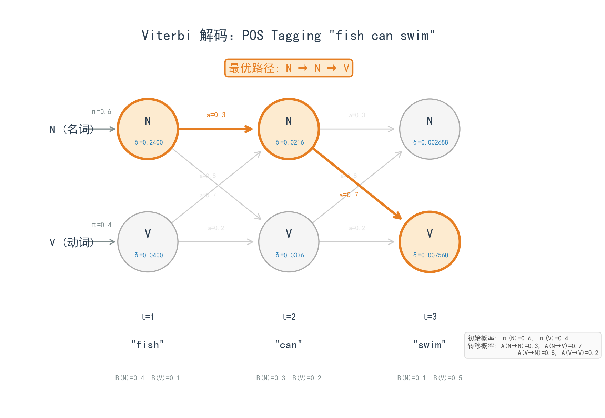

from collections import defaultdict, Counter
import math
class NgramLanguageModel:
"""
简单的N-gram语言模型
使用加一平滑（Laplace smoothing）处理稀疏性
"""
def __init__(self, n=3):
self.n = n
self.ngram_counts = defaultdict(Counter) # context -> {word: count}
self.context_counts = Counter() # context -> total count
self.vocab = set()
def tokenize(self, text):
"""简单的分词：按空格分割，加上起始和结束标记"""
tokens = text.lower().split()
return ['<s>'] * (self.n - 1) + tokens + ['</s>']
def train(self, corpus):
"""从语料库训练模型"""
for sentence in corpus:
tokens = self.tokenize(sentence)
self.vocab.update(tokens)
for i in range(self.n - 1, len(tokens)):
context = tuple(tokens[i - self.n + 1 : i]) # 前n-1个词
word = tokens[i]
self.ngram_counts[context][word] += 1
self.context_counts[context] += 1
def probability(self, word, context):
"""计算P(word|context)，使用加一平滑"""
context = tuple(context[-(self.n-1):]) # 只取最后n-1个词
count = self.ngram_counts[context][word]
total = self.context_counts[context]
vocab_size = len(self.vocab)
# 加一平滑：(count + 1) / (total + vocab_size)
return (count + 1) / (total + vocab_size)
def perplexity(self, sentence):
"""计算句子的困惑度（perplexity）"""
tokens = self.tokenize(sentence)
log_prob = 0
count = 0
for i in range(self.n - 1, len(tokens)):
context = tokens[i - self.n + 1 : i]
word = tokens[i]
prob = self.probability(word, context)
log_prob += math.log(prob)
count += 1
# Perplexity = exp(-average log probability)
return math.exp(-log_prob / count)
def generate(self, context, max_length=20):
"""给定上下文，生成后续文本"""
import random
context = list(context)
generated = []
for _ in range(max_length):
ctx = tuple(context[-(self.n-1):])
if ctx not in self.ngram_counts:
break
# 按概率采样下一个词
words = list(self.ngram_counts[ctx].keys())
weights = [self.ngram_counts[ctx][w] for w in words]
next_word = random.choices(words, weights=weights)[0]
if next_word == '</s>':
break
generated.append(next_word)
context.append(next_word)
return ' '.join(generated)
# 示例使用
corpus = [
"The cat sat on the mat",
"The dog sat on the floor",
"The cat chased the mouse",
"The dog chased the cat",
"A cat is a small animal",
"A dog is a loyal animal",
]
model = NgramLanguageModel(n=3)
model.train(corpus)
# 计算困惑度
test_sentences = [
"The cat sat on the floor", # 类似训练数据
"The elephant flew to the moon", # 完全不同
]
for sent in test_sentences:
ppl = model.perplexity(sent)
print(f"Perplexity of '{sent}': {ppl:.2f}")
# 生成文本
print("\nGenerated text:")
print("Starting with 'The cat':", model.generate(['the', 'cat']))第1章：语言理解的早期探索
从符号到统计的范式转变
NLP
History
N-gram
HMM
CRF
Feature Engineering
前深度学习时代的NLP技术演进：从规则系统到统计学习，从N-gram到CRF，以及为什么特征工程成为了整个领域的天花板。
核心问题：在深度学习之前，人们是如何让计算机理解和处理自然语言的？这些方法取得了什么成就，又遭遇了什么根本性的困难？
历史坐标：1950s-2010s | 从ELIZA到CRF | 符号主义→统计学习的演进
1 从第0章说起
在上一章中，我们讨论了如何阅读NLP研究。现在，让我们正式开始NLP的技术之旅。
但在进入深度学习的世界之前，我们需要先回顾一段历史。这不是为了怀旧，而是因为理解”过去的问题”是理解”现在的解决方案”的前提。深度学习在NLP中的成功并非偶然——它解决了困扰这个领域几十年的根本性问题。如果你不知道那些问题是什么，你就无法真正理解为什么Word2Vec是革命性的，为什么Transformer如此重要，为什么大语言模型改变了一切。
这一章将快速回顾前深度学习时代的NLP。我们会看到两次重要的范式转变：从符号主义到统计方法，以及统计方法如何在”特征工程的诅咒”中逐渐走向瓶颈。这个瓶颈，正是第2章”表示学习”登场的舞台。
💡 本章核心洞察：传统NLP的核心困境是”特征工程”——需要人工设计特征来表示语言现象。这不仅耗费大量专家知识，而且无法扩展到复杂任务。深度学习的革命性在于它”自动学习特征”，彻底打破了这个瓶颈。
2 符号主义的辉煌与幻灭
2.1 早期的梦想：让机器理解语言
1950年代，人工智能刚刚诞生，研究者们对让机器理解语言充满了乐观。当时主流的思路是”符号主义”（Symbolic AI）：把语言看作符号的操作，用逻辑规则来处理。
这个思路直觉上很自然。人类语言有语法规则，句子可以分析成主语、谓语、宾语。如果我们把这些规则编码成程序，机器不就能”理解”语言了吗？
1966年，MIT的Joseph Weizenbaum创建了ELIZA，一个模拟心理治疗师的程序。ELIZA没有任何真正的语言理解能力，它只是用简单的模式匹配和替换规则来响应用户输入。比如，如果用户说”I am sad”，ELIZA会匹配到”I am X”模式，然后回复”Why are you sad?“。这个简单的技巧却让很多用户相信他们在和一个有智能的存在交流。
ELIZA的成功（和它揭示的人类错觉）引发了一波对”聊天机器人”的热情。但更重要的是，它展示了符号主义方法的基本范式：人工编写规则，让机器按规则处理语言。
2.2 规则系统的成就
在接下来的几十年里，基于规则的NLP系统取得了一些令人印象深刻的成就。
句法分析器（Parser）在理解句子结构方面做得相当不错。通过上下文无关文法（Context-Free Grammar）和更复杂的形式语法，研究者可以解析出句子的语法树。比如，“The cat sat on the mat”可以被分析为：[NP [Det The] [N cat]] [VP [V sat] [PP [P on] [NP [Det the] [N mat]]]]。这种分析对于问答系统、信息提取等任务是有用的。
机器翻译也在规则驱动下取得了进展。早期的机器翻译系统依赖双语词典和转换规则。IBM和其他公司投入了大量资源开发这类系统。对于结构相似的语言对（如西班牙语和葡萄牙语），这些系统能产生可用的翻译。
专家系统在特定领域展示了符号AI的威力。比如MYCIN系统可以诊断细菌感染并推荐抗生素，它用数百条规则编码了医学专家的知识。虽然MYCIN处理的是医学知识而非自然语言，但它代表了”用规则编码专家知识”这一范式的巅峰。
2.3 规则系统的根本问题
然而，规则系统很快就遇到了难以逾越的障碍。
第一个问题是规则爆炸。自然语言的复杂性远超预期。一个简单的句子可能有多种合理的解析方式，需要上下文、常识、甚至语用知识来消歧。每增加一个现象的处理，就需要增加大量规则，而这些规则之间可能相互冲突。研究者发现，一个覆盖面广的语法系统可能有成千上万条规则，维护成本极其高昂。
第二个问题是脆弱性。规则系统对输入的变化非常敏感。一个句子稍微换一种说法，或者有一个拼写错误，系统就可能完全失效。真实世界的语言充满了非标准表达、省略、口语化用法，这些都是规则系统的噩梦。
第三个问题是知识获取瓶颈。编写规则需要语言学专家，而专家的时间是有限的。更糟糕的是，很多语言知识是隐性的（tacit knowledge）——母语者能轻松判断一个句子是否自然，但无法说清具体遵循了什么规则。这些知识无法被显式编码。
到了1980年代末，符号主义NLP陷入了困境。研究者开始意识到，靠人工编写规则来覆盖自然语言的复杂性可能是不可行的。这个领域需要一种全新的思路。
3 统计革命：从规则到概率
3.1 数据驱动的范式转变
1990年代，NLP经历了一次根本性的范式转变：从”规则驱动”到”数据驱动”，从”符号处理”到”统计学习”。
这次转变的核心洞察是：与其让专家编写规则，不如让机器从大量数据中自动学习规律。语言中的规律可能太复杂、太隐晦，无法被人类显式编码，但它们确实存在于语言数据中——只要我们有足够的数据和正确的统计工具。
这个转变有几个推动力。首先是数据的可得性。随着数字化文本的增加，研究者可以获得越来越大的语料库。Penn Treebank（1992）提供了大量人工标注的句法树，Brown Corpus提供了标注好的词性数据。这些标注数据使得监督学习成为可能。
其次是计算能力的提升。统计方法往往需要大量计算，1990年代的计算机终于能够处理实用规模的问题了。
最关键的是统计机器翻译的成功。IBM的研究团队在1990年代初提出了一系列基于统计的机器翻译模型（IBM Model 1-5），效果显著优于规则系统。Fred Jelinek有一句著名的话：“Every time I fire a linguist, the performance of the speech recognizer goes up.”（每解雇一个语言学家，语音识别器的性能就提升一些。）这句话虽然有些夸张，但它捕捉到了当时的时代精神：数据和统计可能比语言学规则更重要。
3.2 统计方法的基本思路
统计NLP的核心思想可以用一个公式概括：
\[ \hat{y} = \arg\max_y P(y|x) \]
给定输入\(x\)（比如一个英文句子），找到最可能的输出\(y\)（比如对应的中文翻译）。这个框架可以套用到几乎所有NLP任务：词性标注是给定句子预测每个词的词性，命名实体识别是给定句子预测哪些片段是人名/地名/机构名，情感分析是给定评论预测正面/负面。
实现这个框架需要解决两个问题。第一是如何定义\(P(y|x)\)——用什么模型来表示这个概率分布？第二是如何从数据中学习模型的参数——这就是机器学习的任务。
在深度学习之前，主流的做法是：人工设计特征函数\(\phi(x)\)来表示输入，然后用经典的机器学习模型（如逻辑回归、SVM、CRF）来学习从特征到输出的映射。这就是”特征工程+经典分类器”的范式。
4 N-gram与语言模型基础
4.1 什么是语言模型？
在深入讨论”特征工程”之前，我们先介绍一个贯穿整个NLP历史的核心概念：语言模型（Language Model）。
语言模型的目标是给文本分配概率——评估一段文本在给定语言中有多”自然”。形式化地，给定一个词序列\(w_1, w_2, \ldots, w_n\)，语言模型计算：
\[ P(w_1, w_2, \ldots, w_n) \]
这个看似简单的目标有深远的应用。在机器翻译中，语言模型帮助选择更流畅的译文。在语音识别中，语言模型帮助消除声学歧义。在拼写纠错中，语言模型判断哪个候选词更合理。可以说，语言模型是NLP的”基础设施”。
4.2 N-gram：简单而有效
如何估计\(P(w_1, w_2, \ldots, w_n)\)？直接估计是不可行的——可能的词序列数量随长度指数增长，任何语料库都无法覆盖所有可能的句子。
N-gram语言模型提供了一个简洁的近似。核心假设是马尔可夫假设：一个词的出现只依赖于它前面的\(n-1\)个词。用链式法则展开联合概率：
\[ P(w_1, \ldots, w_n) = \prod_{i=1}^{n} P(w_i | w_1, \ldots, w_{i-1}) \]
然后用马尔可夫假设简化：
\[ P(w_i | w_1, \ldots, w_{i-1}) \approx P(w_i | w_{i-n+1}, \ldots, w_{i-1}) \]
当\(n=2\)时，称为bigram模型：\(P(w_i | w_{i-1})\)。当\(n=3\)时，称为trigram模型：\(P(w_i | w_{i-2}, w_{i-1})\)。
这些条件概率如何估计？最简单的方法是最大似然估计（MLE），也就是计数：
\[ P(w_i | w_{i-1}) = \frac{C(w_{i-1}, w_i)}{C(w_{i-1})} \]
其中\(C(\cdot)\)是语料库中的计数。这种方法直观、高效，在足够大的语料库上可以得到不错的估计。
4.2.1 数值示例：Bigram 概率计算
让我们用一个极简的例子来具体理解 N-gram 是如何工作的。
语料库（3个句子）：
- “I love cats”
- “I love dogs”
- “cats love fish”
Step 1: 统计 Bigram 计数
首先为每个句子加上起始符号 <s> 和结束符号 </s>，然后统计所有相邻词对的出现次数：
| Bigram | 计数 |
|---|---|
<s> I |
2 |
| I love | 2 |
| love cats | 1 |
| love dogs | 1 |
| love fish | 1 |
cats </s> |
1 |
dogs </s> |
1 |
fish </s> |
1 |
| cats love | 1 |
同时统计每个词作为”前一个词”出现的总次数：
| 词 | 作为前词的总次数 |
|---|---|
<s> |
3 |
| I | 2 |
| love | 3 |
| cats | 2 |
| dogs | 1 |
| fish | 1 |
Step 2: 计算条件概率
使用 MLE 公式 \(P(w_i | w_{i-1}) = \frac{C(w_{i-1}, w_i)}{C(w_{i-1})}\)：
\[ P(\text{love} | \text{I}) = \frac{C(\text{I love})}{C(\text{I})} = \frac{2}{2} = 1.0 \]
\[ P(\text{cats} | \text{love}) = \frac{C(\text{love cats})}{C(\text{love})} = \frac{1}{3} \approx 0.33 \]
\[ P(\text{dogs} | \text{love}) = \frac{C(\text{love dogs})}{C(\text{love})} = \frac{1}{3} \approx 0.33 \]
Step 3: 计算句子概率
现在计算一个新句子 “I love fish” 的概率：
\[ P(\text{I love fish}) = P(\text{I}|\text{<s>}) \times P(\text{love}|\text{I}) \times P(\text{fish}|\text{love}) \times P(\text{</s>}|\text{fish}) \]
\[ = \frac{2}{3} \times \frac{2}{2} \times \frac{1}{3} \times \frac{1}{1} = \frac{2}{3} \times 1 \times \frac{1}{3} \times 1 = \frac{2}{9} \approx 0.22 \]
Step 4: 计算困惑度（Perplexity）
困惑度是语言模型的标准评估指标，定义为：
\[ \text{PPL} = P(w_1, \ldots, w_n)^{-1/n} = \exp\left(-\frac{1}{n}\sum_{i=1}^{n} \log P(w_i|w_{i-1})\right) \]
对于 “I love fish”（4个token，含</s>）：
\[ \text{PPL} = \left(\frac{2}{9}\right)^{-1/4} = \left(\frac{9}{2}\right)^{1/4} \approx 1.46 \]
困惑度越低，说明模型对句子的”惊讶程度”越低，即句子越符合训练数据的分布。
关键观察：
- “I love fish” 虽然在训练数据中没有出现过，但因为 “love fish” 这个 bigram 出现过，所以概率不为零
- 如果我们问 “I hate cats” 的概率，由于 “I hate” 从未出现，MLE 会给出 \(P = 0\)——这就是稀疏性问题
4.3 N-gram的局限
N-gram模型虽然简单有效，但有几个根本性的局限。
第一是稀疏性问题。即使在大型语料库中，大多数n-gram组合也从未出现过。如果\(C(w_{i-1}, w_i) = 0\)，MLE会给出\(P(w_i|w_{i-1}) = 0\)，这显然不合理——一个从未见过的词序列不一定是不可能的。研究者发明了各种”平滑”技术来解决这个问题（加一平滑、Kneser-Ney平滑、Good-Turing估计），但这本质上是在”打补丁”。
第二是上下文窗口固定。马尔可夫假设是一个很强的假设：词只依赖于前面的\(n-1\)个词。但语言中的依赖关系可以跨越很长的距离。考虑这个例子：“The keys to the cabinet are on the table.”主语”keys”和动词”are”之间隔了四个词。trigram模型在预测”are”时只能看到”cabinet are”，完全看不到”keys”，因此会倾向于预测单数形式”is”。增大\(n\)可以部分缓解这个问题，但参数数量会指数增长，很快变得不可行。
第三是没有泛化能力。N-gram完全依赖表面形式的计数，不理解词的含义。“The cat sat on the mat”和”The dog sat on the mat”对N-gram来说是完全不同的序列，即使人类知道”cat”和”dog”都是动物、都能坐在垫子上。
这些局限预示了后面章节要解决的问题：如何表示词的”含义”（第2章：Word2Vec），如何建模长距离依赖（第4章：LSTM），如何不受固定窗口限制（第5-8章：Attention和Transformer）。
5 序列标注：从HMM到CRF的演进
5.1 序列标注问题
NLP中有一大类任务属于”序列标注”（Sequence Labeling）：给定一个词序列，为每个词分配一个标签。经典例子包括词性标注（POS tagging）——判断每个词是名词、动词还是形容词，命名实体识别（NER）——识别出人名、地名、机构名等，以及分词（对于中文等没有明确词边界的语言）。
序列标注的挑战在于标签之间有依赖关系。比如在词性标注中，冠词后面通常是名词或形容词，而不是动词。在NER中，一个人名可能由多个词组成（如”New York”是一个整体）。独立地预测每个词的标签会忽略这些依赖，效果不佳。
5.2 隐马尔可夫模型（HMM）
隐马尔可夫模型是序列标注的经典工具。它假设存在一个隐藏的状态序列（标签），生成了我们观察到的词序列。
HMM有两个核心假设。第一是马尔可夫假设：当前状态只依赖于前一个状态，\(P(y_t | y_1, \ldots, y_{t-1}) = P(y_t | y_{t-1})\)。第二是输出独立性假设：当前观察只依赖于当前状态，\(P(x_t | y_1, \ldots, y_t, x_1, \ldots, x_{t-1}) = P(x_t | y_t)\)。
基于这两个假设，HMM定义了序列的联合概率：
\[ P(x, y) = \prod_{t=1}^{T} P(y_t | y_{t-1}) \cdot P(x_t | y_t) \]
其中\(P(y_t | y_{t-1})\)是转移概率（transition probability），\(P(x_t | y_t)\)是发射概率（emission probability）。
给定一个观察序列\(x\)，如何找到最可能的标签序列\(y\)？这是一个动态规划问题，可以用Viterbi算法高效求解，复杂度是\(O(TK^2)\)，其中\(T\)是序列长度，\(K\)是标签数量。
NoteAlgorithm: Viterbi 解码 (Rabiner, 1989)
输入：观察序列 \(O = (o_1, o_2, \ldots, o_T)\)，HMM 参数 \(\lambda = (\pi, A, B)\)
输出：最优状态序列 \(Q^* = (q_1^*, q_2^*, \ldots, q_T^*)\)
1. 初始化 (\(t = 1\))： \[ \delta_1(i) = \pi_i \cdot b_i(o_1), \quad 1 \leq i \leq N \] \[ \psi_1(i) = 0 \]
2. 递归 (\(t = 2, 3, \ldots, T\))： \[ \delta_t(j) = \max_{1 \leq i \leq N} \left[ \delta_{t-1}(i) \cdot a_{ij} \right] \cdot b_j(o_t), \quad 1 \leq j \leq N \] \[ \psi_t(j) = \arg\max_{1 \leq i \leq N} \left[ \delta_{t-1}(i) \cdot a_{ij} \right], \quad 1 \leq j \leq N \]
3. 终止： \[ P^* = \max_{1 \leq i \leq N} \delta_T(i) \] \[ q_T^* = \arg\max_{1 \leq i \leq N} \delta_T(i) \]
4. 回溯 (\(t = T-1, T-2, \ldots, 1\))： \[ q_t^* = \psi_{t+1}(q_{t+1}^*) \]
其中： - \(\delta_t(i)\)：在时刻 \(t\) 状态为 \(i\)，且经过最优路径到达的概率 - \(\psi_t(j)\)：回溯指针，记录到达状态 \(j\) 的最优前驱状态 - \(\pi_i\)：初始状态概率，\(a_{ij}\)：转移概率，\(b_j(o_t)\)：发射概率
Source: Rabiner, L. (1989). “A Tutorial on Hidden Markov Models and Selected Applications in Speech Recognition”. Proceedings of the IEEE, 77(2), 257-286. PDF
5.2.1 数值示例：Viterbi 解码
让我们用一个具体的例子来理解 Viterbi 算法是如何找到最优标签序列的。
问题设定：词性标注任务
- 状态（标签）：N（名词）、V（动词），共2种
- 观察（词）：句子 “fish can swim”
- 目标：找到最可能的词性序列
模型参数：
初始概率 \(\pi\)（句子以某个词性开始的概率）：
\[ \pi(N) = 0.6, \quad \pi(V) = 0.4 \]
转移概率 \(A\)（从一个词性转移到另一个词性）：
| \(P(y_t \| y_{t-1})\) | → N | → V |
|---|---|---|
| N → | 0.3 | 0.7 |
| V → | 0.8 | 0.2 |
解读：名词后面 70% 是动词，动词后面 80% 是名词。
发射概率 \(B\)（某个词性生成某个词）：
| \(P(x \| y)\) | “fish” | “can” | “swim” |
|---|---|---|---|
| N | 0.4 | 0.3 | 0.1 |
| V | 0.1 | 0.2 | 0.5 |
解读：“fish” 更可能是名词（0.4 vs 0.1），“swim” 更可能是动词（0.5 vs 0.1）。
Viterbi 算法逐步计算
Viterbi 使用动态规划，定义 \(\delta_t(j)\) 为在时刻 \(t\)、状态为 \(j\) 时，所有路径中的最大概率。
\(t=1\)：处理 “fish”
\[ \delta_1(N) = \pi(N) \times P(\text{fish}|N) = 0.6 \times 0.4 = 0.24 \]
\[ \delta_1(V) = \pi(V) \times P(\text{fish}|V) = 0.4 \times 0.1 = 0.04 \]
| 状态 | \(\delta_1\) | 回溯指针 |
|---|---|---|
| N | 0.24 | - |
| V | 0.04 | - |
\(t=2\)：处理 “can”
对于每个当前状态，考虑所有可能的前一状态，取最大值：
\[ \delta_2(N) = \max\begin{cases} \delta_1(N) \times P(N|N) \times P(\text{can}|N) = 0.24 \times 0.3 \times 0.3 = 0.0216 \\ \delta_1(V) \times P(N|V) \times P(\text{can}|N) = 0.04 \times 0.8 \times 0.3 = 0.0096 \end{cases} \]
最大值是 0.0216，来自 N→N 路径。
\[ \delta_2(V) = \max\begin{cases} \delta_1(N) \times P(V|N) \times P(\text{can}|V) = 0.24 \times 0.7 \times 0.2 = 0.0336 \\ \delta_1(V) \times P(V|V) \times P(\text{can}|V) = 0.04 \times 0.2 \times 0.2 = 0.0016 \end{cases} \]
最大值是 0.0336，来自 N→V 路径。
| 状态 | \(\delta_2\) | 回溯指针 |
|---|---|---|
| N | 0.0216 | ← N |
| V | 0.0336 | ← N |
\(t=3\)：处理 “swim”
\[ \delta_3(N) = \max\begin{cases} \delta_2(N) \times P(N|N) \times P(\text{swim}|N) = 0.0216 \times 0.3 \times 0.1 = 0.000648 \\ \delta_2(V) \times P(N|V) \times P(\text{swim}|N) = 0.0336 \times 0.8 \times 0.1 = 0.002688 \end{cases} \]
最大值是 0.002688，来自 V→N 路径。
\[ \delta_3(V) = \max\begin{cases} \delta_2(N) \times P(V|N) \times P(\text{swim}|V) = 0.0216 \times 0.7 \times 0.5 = 0.00756 \\ \delta_2(V) \times P(V|V) \times P(\text{swim}|V) = 0.0336 \times 0.2 \times 0.5 = 0.00336 \end{cases} \]
最大值是 0.00756，来自 N→V 路径。
| 状态 | \(\delta_3\) | 回溯指针 |
|---|---|---|
| N | 0.002688 | ← V |
| V | 0.00756 | ← N |
回溯找最优路径
- \(t=3\)：最大的是 \(\delta_3(V) = 0.00756\)，所以 \(y_3 = V\)
- \(t=2\)：\(y_3 = V\) 的回溯指针指向 N，所以 \(y_2 = N\)
- \(t=1\)：\(y_2 = N\) 的回溯指针指向 N，所以 \(y_1 = N\)
最终结果：
| 词 | fish | can | swim |
|---|---|---|---|
| 词性 | N | N | V |
解读：“fish” 是名词（鱼），“can” 是名词（罐头），“swim” 是动词。这个结果符合直觉！

Python生成，基于 Rabiner (1989) Viterbi 算法
Note为什么不是 N-V-V？
你可能会问：“can” 不是也可以当动词（能够）吗？为什么 Viterbi 选了 N-N-V 而不是 N-V-V？
让我们比较这两条路径的概率：
- N-N-V：\(0.6 \times 0.4 \times 0.3 \times 0.3 \times 0.7 \times 0.5 = 0.00756\)
- N-V-V：\(0.6 \times 0.4 \times 0.7 \times 0.2 \times 0.2 \times 0.5 = 0.00336\)
N-N-V 更优！原因是：虽然 “can” 作动词合理，但 V→V 的转移概率只有 0.2（连续两个动词不常见），而 N→V 的转移概率是 0.7。这个例子展示了 HMM 如何利用转移概率来消歧。
HMM在词性标注等任务上取得了不错的效果，长期是主流方法。但它有一个根本性的局限：生成模型的约束。HMM是一个生成模型，它建模的是\(P(x, y)\)而非\(P(y|x)\)。为了使模型tractable，它必须做很强的独立性假设（发射概率只依赖当前状态）。这意味着它很难利用丰富的输入特征。
5.3 条件随机场（CRF）
条件随机场（Conditional Random Field）是对HMM的一个根本性改进。它是判别模型，直接建模\(P(y|x)\)，因此不需要对输入\(x\)做任何假设。
线性链CRF的形式是：
\[ P(y|x) = \frac{1}{Z(x)} \exp\left(\sum_{t=1}^{T} \sum_k \lambda_k f_k(y_{t-1}, y_t, x, t)\right) \]
这里\(f_k\)是特征函数，\(\lambda_k\)是要学习的权重，\(Z(x)\)是归一化常数。
CRF的关键优势是特征的灵活性。特征函数\(f_k\)可以依赖于整个输入序列\(x\)，而不只是当前位置。比如，可以定义特征”如果当前词以-ing结尾，且标签是VBG（动词进行时），则特征为1”，或者”如果前一个词是冠词，且当前标签是NN（名词），则特征为1”。这种灵活性让CRF可以利用丰富的语言学知识和上下文信息。
CRF在2000年代成为序列标注的标准方法，在很多任务上显著超越了HMM。然而，它也面临一个问题：特征需要人工设计。这就是下一节要讨论的”特征工程的诅咒”。
6 核心痛点：特征工程的诅咒
6.1 什么是特征工程？
在深度学习之前，几乎所有NLP系统都遵循同一个范式：
原始文本 → 特征提取 → 经典分类器 → 预测结果“特征提取”这一步是关键，也是最耗费人力的部分。特征（feature）是对输入的一种数值表示，它应该捕获与任务相关的信息。
以情感分析为例。如何表示一条评论，让分类器能判断它是正面还是负面？研究者需要设计各种特征。最简单的是词袋特征（Bag of Words），统计每个词出现的次数，形成一个高维向量。然后可以加入N-gram特征，不只看单词，还看词组，如”not good”作为一个整体。还可以设计否定词处理特征，检测”not”“never”等否定词，翻转后续词的极性。可以利用情感词典，统计正面词和负面词的数量。句法特征也有用，比如主语是什么，动词是什么，形容词修饰什么…
这个过程就是”特征工程”：由领域专家（语言学家、NLP研究者）根据任务需求和语言学知识，手工设计特征。
6.2 特征工程的困境
特征工程有几个根本性的问题。
第一是耗费专家知识。设计好的特征需要深厚的语言学背景和任务理解。不同任务需要不同的特征，一个情感分析的专家设计的特征可能对问答系统毫无用处。专家的时间是昂贵的、有限的。
第二是无法捕获复杂模式。很多语言现象太复杂、太隐晦，人类专家无法想到合适的特征。比如，讽刺（irony）的检测需要理解字面意思和说话者意图的不一致，这种”不一致”如何用特征表示？隐喻（metaphor）的理解需要概念之间的类比关系，这如何显式编码？
第三是特征之间的交互。很多有用的模式是特征的组合，而不是单个特征。比如，“not bad”表达的是轻微正面情感，需要同时考虑”not”和”bad”的交互。手工设计所有可能的交互是不可行的——特征数量会组合爆炸。
第四是任务迁移困难。为一个任务设计的特征往往不能直接用于另一个任务。每换一个任务，特征工程就要从头做起。这与人类的学习方式形成鲜明对比——人类学会阅读后，可以轻松迁移到各种阅读理解任务。
6.3 一个具体的例子：命名实体识别
让我用命名实体识别（NER）来具体说明特征工程的复杂性。
NER的任务是识别文本中的人名、地名、机构名等实体。一个典型的句子可能是：“Barack Obama was born in Hawaii.”我们需要识别出”Barack Obama”是人名（PER），“Hawaii”是地名（LOC）。
为了训练一个CRF模型做NER，研究者可能设计这些特征：
词级特征：当前词本身、当前词的小写形式、当前词的前缀（前3个字符）、当前词的后缀（后3个字符）。
正字法特征（orthographic）：词是否全大写、词是否首字母大写、词是否包含数字、词是否包含标点。
上下文特征：前一个词、后一个词、前两个词、后两个词，以及它们的各种组合。
词典特征：词是否出现在人名词典中、是否出现在地名词典中、是否出现在机构名词典中。
句法特征：词的词性标签、词在句法树中的位置、依存关系。
聚类特征：词在Brown Clustering中的cluster ID（一种无监督的词聚类方法）。
一个工业级的NER系统可能有成百上千个这样的特征。研究者需要逐一设计、实验、调优。如果换一个领域（比如从新闻变成生物医学文本），很多特征需要重新设计，词典需要重新收集。
这就是”特征工程的诅咒”：它work，但它不scale。
6.4 瓶颈的本质
如果我们抽象一下，特征工程的本质问题是：表示问题。
我们需要把原始文本（一个符号序列）转换成机器学习模型可以处理的数值表示（向量）。传统方法依赖人工设计这个转换过程。但自然语言太复杂、太多变，人工设计无法覆盖所有情况。
这就引出了一个自然的问题：能不能让机器自己学习如何表示语言？
这个问题的答案，就是下一章的主题：表示学习，从Word2Vec开始的”词向量”革命。
7 工程实践：传统NLP Pipeline体验
为了让你对传统NLP有更直观的感受，让我们用Python实现一个简单的N-gram语言模型和一个基于CRF的NER系统。
7.1 N-gram语言模型
7.2 使用CRF做命名实体识别
# 需要安装: pip install sklearn-crfsuite
import sklearn_crfsuite
from sklearn_crfsuite import metrics
def word2features(sentence, i):
"""
为句子中第i个词提取特征
这就是"特征工程"——人工设计的特征
"""
word = sentence[i]
features = {
# 基本特征
'word.lower': word.lower(),
'word.isupper': word.isupper(),
'word.istitle': word.istitle(),
'word.isdigit': word.isdigit(),
# 词的形态特征
'word.prefix2': word[:2].lower(),
'word.prefix3': word[:3].lower(),
'word.suffix2': word[-2:].lower(),
'word.suffix3': word[-3:].lower(),
# 词长
'word.length': len(word),
}
# 上下文特征：前一个词
if i > 0:
prev_word = sentence[i-1]
features.update({
'-1:word.lower': prev_word.lower(),
'-1:word.istitle': prev_word.istitle(),
})
else:
features['BOS'] = True # Beginning of Sentence
# 上下文特征：后一个词
if i < len(sentence) - 1:
next_word = sentence[i+1]
features.update({
'+1:word.lower': next_word.lower(),
'+1:word.istitle': next_word.istitle(),
})
else:
features['EOS'] = True # End of Sentence
return features
def sent2features(sentence):
"""为整个句子提取特征"""
return [word2features(sentence, i) for i in range(len(sentence))]
# 示例数据（简化的NER数据）
train_data = [
# (句子, 标签)
(["Barack", "Obama", "was", "born", "in", "Hawaii", "."],
["B-PER", "I-PER", "O", "O", "O", "B-LOC", "O"]),
(["Apple", "Inc", "is", "located", "in", "California", "."],
["B-ORG", "I-ORG", "O", "O", "O", "B-LOC", "O"]),
(["John", "Smith", "works", "at", "Google", "."],
["B-PER", "I-PER", "O", "O", "B-ORG", "O"]),
]
# 准备训练数据
X_train = [sent2features(sent) for sent, _ in train_data]
y_train = [labels for _, labels in train_data]
# 训练CRF模型
crf = sklearn_crfsuite.CRF(
algorithm='lbfgs',
c1=0.1, # L1正则化
c2=0.1, # L2正则化
max_iterations=100,
)
crf.fit(X_train, y_train)
# 测试
test_sentence = ["Elon", "Musk", "founded", "Tesla", "in", "Palo", "Alto", "."]
X_test = [sent2features(test_sentence)]
y_pred = crf.predict(X_test)[0]
print("NER结果：")
for word, label in zip(test_sentence, y_pred):
print(f" {word:12} -> {label}")7.3 体会特征工程的痛苦
上面的CRF代码中，word2features函数就是特征工程的缩影。注意我们需要手工定义每一个特征：词的大小写、前缀后缀、上下文词…
现在想象一下，如果你需要处理一个新任务（比如关系抽取），或者换一个领域（比如生物医学文本），你需要重新设计整套特征。词典需要重新收集，词性标注可能不够用，需要加入领域特定的知识…
这就是为什么深度学习的”自动特征学习”如此革命性——它让我们摆脱了这个瓶颈。
8 深入理解
研究者视角：这一节探讨传统NLP方法的理论基础和历史意义
8.1 为什么统计方法最终胜出？
符号主义和统计主义的争论贯穿了AI历史。在NLP领域，统计方法最终占据了主导，但这不意味着符号主义完全失败了。
统计方法胜出的原因可以从几个角度理解。首先是鲁棒性。规则系统对噪声和变体非常敏感，而统计方法天然具有”平均化”的能力，对噪声更鲁棒。其次是可扩展性。人工编写规则的速度无法跟上数据增长的速度，而统计模型可以自动从更多数据中受益。第三是客观评估。统计方法自然地引入了定量评估（准确率、F1等），使得不同方法可以公平比较，推动了领域的科学化。
然而，符号主义的一些洞察仍然有价值。语言确实有结构，语法规则确实存在，推理需要符号操作。现代的混合方法（neural-symbolic）试图结合两者的优势。
8.2 马尔可夫假设的边界
N-gram和HMM都依赖马尔可夫假设。这个假设在什么时候合理，什么时候失效？
马尔可夫假设在局部依赖主导的情况下效果不错。比如词性标注中，当前词的词性主要由相邻的1-2个词决定。对于这类任务，HMM和N-gram可以取得很好的效果。
但语言中有大量长距离依赖，马尔可夫假设在这些情况下就失效了。主谓一致可能跨越很多词。代词指代可能需要回溯很多句子。篇章连贯性需要理解整个段落甚至文档。对于这些任务，固定窗口的模型天然受限。
这个局限性直接导向了第4章的RNN和第8章的Transformer——它们试图打破固定窗口的限制。
8.3 生成模型 vs 判别模型
HMM是生成模型，CRF是判别模型。这两种范式的差异是什么？
生成模型建模联合分布\(P(X, Y)\)，然后用贝叶斯定理得到\(P(Y|X)\)。它对输入\(X\)的分布做了假设（如HMM的发射概率假设）。这带来了一些优势：可以生成新样本，可以处理缺失数据，有时更容易解释。但也有劣势：模型假设可能与现实不符，难以引入复杂特征。
判别模型直接建模\(P(Y|X)\)，不对\(X\)的分布做假设。这带来了灵活性：可以引入任意特征，不需要担心\(X\)的分布。在实践中，判别模型在分类任务上通常优于生成模型，这就是CRF超越HMM的原因。
深度学习模型大多是判别模型（如BERT做分类）。但生成模型的思想在语言模型（GPT系列）中得到了复兴——它们通过自回归方式”生成”文本。
8.4 开放问题与反思
回顾这段历史，有几个开放问题值得思考。
第一，特征工程真的一无是处吗？深度学习确实可以自动学习特征，但人工设计的特征有时仍然有用。特别是在数据有限的情况下，好的特征可以引入有用的归纳偏置。如何将领域知识与端到端学习结合，仍然是一个活跃的研究方向。
第二，小模型有没有价值？N-gram和CRF模型非常轻量，可以在边缘设备上运行。在大模型时代，小而专的模型是否还有一席之地？
第三，可解释性的代价是什么？传统方法往往更可解释——你可以检查特征权重，理解模型为什么做出某个预测。深度学习模型是”黑箱”。这个trade-off在高风险应用中尤其重要。
9 局限性与未解决的问题
9.1 特征工程不可扩展
传统方法的最大局限是特征工程的瓶颈。这不只是”麻烦”的问题，而是”不可能”的问题——对于足够复杂的任务（如开放域问答、自由对话），没有人能设计出足够好的特征。
9.2 表示的离散性
传统方法把词当作离散符号处理。“cat”和”dog”只是两个不同的ID，模型不知道它们都是动物、都是宠物、都有四条腿。这种离散表示无法捕获语义相似性，导致泛化困难。
9.3 任务特定性
每个任务需要独立设计特征、独立训练模型。知识无法在任务之间迁移。这与人类的学习方式形成鲜明对比——人类学会一种语言技能后，可以轻松迁移到相关任务。
9.4 这些局限导向了什么？
上述问题共同指向一个核心需求：学习词的分布式表示（distributed representation），让语义相似的词有相似的表示，让这种表示可以在任务之间共享和迁移。
这正是下一章的主题：表示学习，从Word2Vec开启的词向量革命。
下一章预告：第2章将介绍Word2Vec——一个简单但革命性的想法，它让机器第一次能够”理解”词的含义。
10 本章小结
10.1 核心要点回顾
这一章我们快速回顾了深度学习之前的NLP历史。
符号主义尝试用规则处理语言，在有限领域取得了成功，但无法扩展到复杂的真实世界任务。统计革命带来了数据驱动的范式，用概率模型从数据中学习规律。N-gram语言模型和HMM/CRF序列标注模型是这个时代的代表性技术。
但统计方法有一个致命弱点：依赖人工设计特征。这个”特征工程的诅咒”成为了整个领域的瓶颈，直到深度学习带来的”表示学习”革命才被打破。
10.2 关键概念速查
| 概念 | 定义 |
|---|---|
| N-gram | 基于马尔可夫假设的语言模型，用前n-1个词预测下一个词 |
| HMM | 隐马尔可夫模型，用于序列标注的生成模型 |
| CRF | 条件随机场，用于序列标注的判别模型 |
| 特征工程 | 人工设计将原始输入转换为数值表示的过程 |
| 生成模型 vs 判别模型 | 前者建模P(X,Y)，后者直接建模P(Y |
10.3 思考题
[概念理解] 为什么说马尔可夫假设是一个”强假设”？举一个马尔可夫假设失效的具体例子。
[对比分析] 比较HMM和CRF在建模假设上的区别。为什么CRF在序列标注任务上通常优于HMM？
[工程实践] 为一个情感分析任务设计特征。你会设计哪些特征？这些特征能否捕获讽刺（irony）的情况？
[研究思考] 如果深度学习没有出现，你认为NLP领域会如何发展？特征工程是否有其他的突破口？
11 延伸阅读
11.1 经典教材
“Speech and Language Processing” (Jurafsky & Martin)：NLP领域的”圣经”，第1-6章详细介绍了本章涉及的内容。第3版在线免费，是很好的参考资料。
11.2 历史论文
“A Maximum Entropy Model for Part-of-Speech Tagging” (Ratnaparkhi, 1996)：最大熵模型在NLP中的经典应用，展示了特征工程的典型范式。
“Conditional Random Fields: Probabilistic Models for Segmenting and Labeling Sequence Data” (Lafferty et al., 2001)：CRF的原始论文，开创了判别式序列标注的时代。
11.3 回顾与反思
“The Last 10 Meters of AI” (Knight, 2019)：一篇讨论符号主义与神经网络融合的文章，提供了对这段历史的反思。
11.4 工具与代码
NLTK (Natural Language Toolkit)：Python的经典NLP库，包含大量传统方法的实现。适合学习和原型开发。
sklearn-crfsuite：CRF的Python实现，本章实践部分使用了这个库。
12 历史注脚
“Every time I fire a linguist, the performance goes up”这句话经常被引用来说明统计方法的胜利，但它的完整语境更加微妙。Fred Jelinek并不是真的反对语言学——IBM的语音识别团队中也有语言学家。他的观点是：纯粹基于语言学规则的方法不如数据驱动的方法有效，但语言学知识仍然可以作为特征融入统计模型。
有趣的是，深度学习时代的某些发展似乎又在”回归”某种结构。Transformer的Self-Attention可以学习出类似语法依赖的模式；预训练模型似乎”知道”一些语法规则。也许符号主义与统计/神经方法的争论不是”谁对谁错”，而是”如何结合”。
另一个有趣的历史细节是：很多深度学习时代的”新想法”其实有很早的先驱。Word2Vec的思想可以追溯到1980年代的分布式表示（distributed representation）。注意力机制的雏形可以在传统的alignment model中找到。历史常常以螺旋的方式前进。